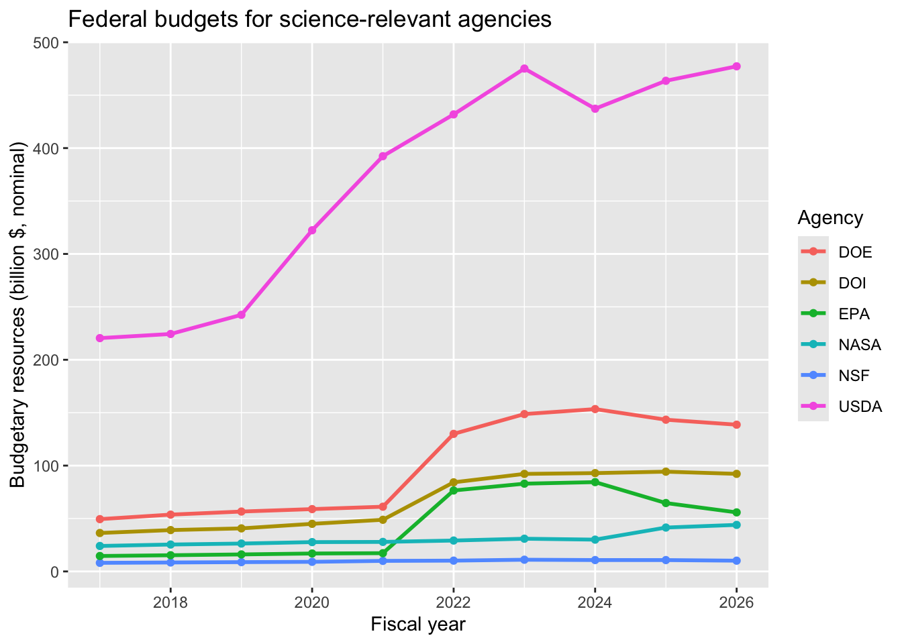
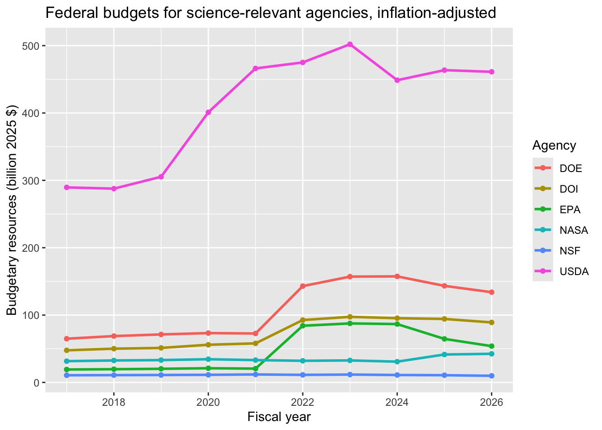
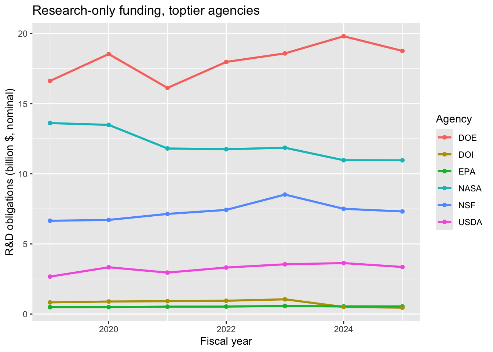
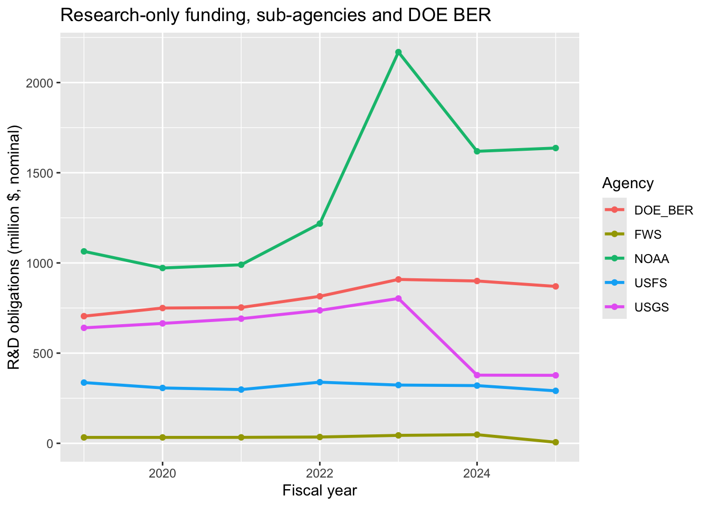
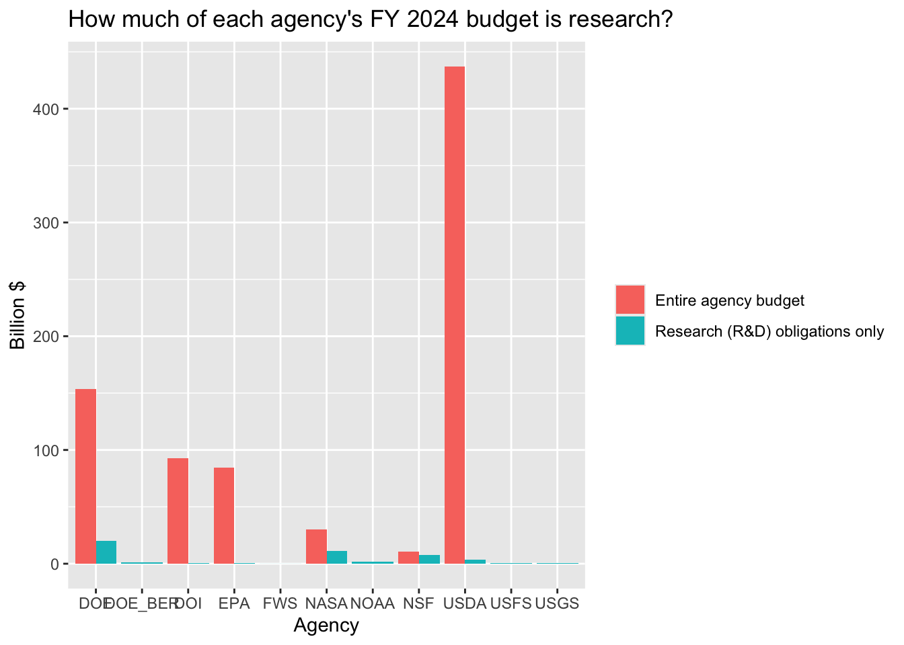
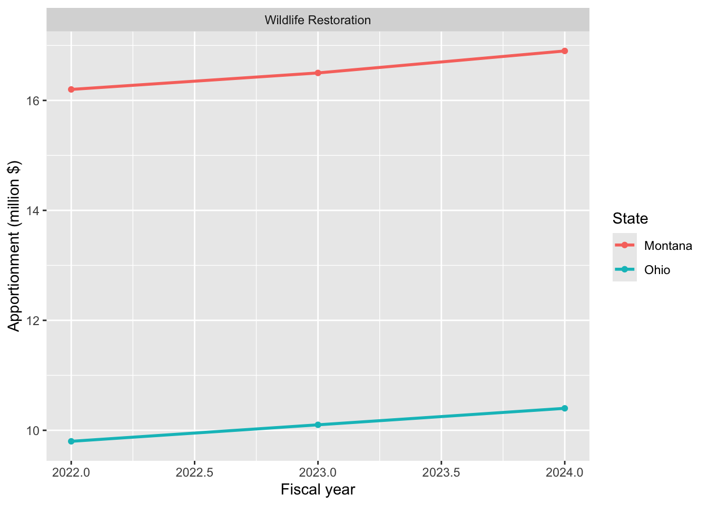
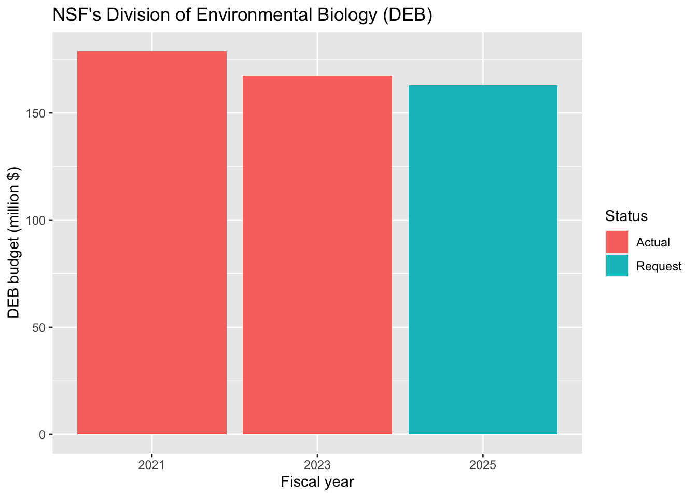

install.packages("jsonlite", repos = "https://cloud.r-project.org")18 Funding Ecological and Environmental Science: Following the Money
…in which we discover who pays for ecology, and why that answer keeps changing.
18.1 Goals
In this assignment, you will
- Identify the major federal agencies–and one major federal-to-state funding stream–that pay for ecological and environmental research.
- Use R to pull live budget data directly from a government API, rather than a file someone else already cleaned for you.
- Construct and compare time series of funding across agencies and across a fundamentally different funding mechanism (formula-based state apportionments).
- Distinguish nominal dollars from inflation-adjusted (“real”) dollars, and explain why the distinction matters when you compare years.
- Distinguish an agency’s entire budget from the slice of it that actually funds research–and see, concretely, how much bigger the difference can be for some agencies (NASA, USDA) than others (NSF).
- Find and explain research that interests you; describe the scientific motivation for the research and explain how the investigators used or plan to use the research award.
- Evaluate what recent (2025-2026) federal budget changes mean for the pipeline of ecological research, and for your own options as an early-career scientist.
18.2 Background
Ecological and environmental science does not fund itself. Someone decides, every year, how many dollars go toward understanding populations, ecosystems, and environmental change–and those decisions shape which questions get asked, which species and places get studied, and who gets to be a scientist. If you take classes in university science departments, or plan to do research, apply for a grant, or simply understand why a particular topic is (or is not) well studied, it helps to know where the money for research comes from.
In the United States, most federal money for ecological and environmental research flows through a handful of agencies, each with a different mission.
- The National Science Foundation (NSF) is the primary funder of basic, curiosity-driven ecological research at universities. Within NSF, the Directorate for Biological Sciences, and, inside that, the Division of Environmental Biology (DEB), funds most of the population, community, and ecosystem ecology done at U.S. universities.
- The Environmental Protection Agency (EPA), mainly through its Office of Research and Development, funds applied research on pollution, toxicology, and environmental health. Its competitive extramural program, Science to Achieve Results (STAR), has historically funded university research connecting environmental quality to human and ecological health.
- The U.S. Department of Agriculture (USDA) funds applied ecology two ways: through the National Institute of Food and Agriculture (NIFA), which makes competitive grants to university researchers (for example, the Agriculture and Food Research Initiative and the McIntire-Stennis forestry program), and through its own Forest Service Research and Development branch, which conducts forest and rangeland ecology research directly–often at USDA’s own experimental forests–rather than by funding outside investigators.
- The National Oceanic and Atmospheric Administration (NOAA), part of the Department of Commerce, funds fisheries, coastal, and climate-related ecological research.
- The Department of Energy (DOE) funds a large research portfolio, but most of it is about energy technology–fossil fuels, nuclear power, renewables–not ecology. The slice that funds ecosystem, watershed, and climate science sits in a single office inside DOE’s Office of Science, Biological and Environmental Research (BER); later in this chapter we isolate BER’s own numbers to see how small a share of DOE’s total research budget it really is.
- The National Aeronautics and Space Administration (NASA) funds Earth-observing satellites and remote sensing research that ecologists use to track land cover, wildfire, drought, and ecosystem change–a smaller, less obvious slice of an agency best known for astronauts and telescopes.
- The U.S. Fish and Wildlife Service (FWS), an agency inside the Department of the Interior (DOI)–alongside the U.S. Geological Survey, the Bureau of Land Management, and the National Park Service–funds and conducts wildlife research directly. FWS also plays a second, very different role you will meet in Part 2: it is the agency that administers the formula-based apportionments that send hunting- and fishing-tax revenue to state wildlife agencies.
- The U.S. Geological Survey (USGS), also inside DOI, is–by dollars obligated to research–the single largest source of federal ecological field science: climate, ecosystems, wildlife disease, and water research, carried out mostly by USGS’s own scientists rather than through grants to universities.
- Private foundations fund ecological and environmental science too, outside the federal appropriations process entirely. The Gordon and Betty Moore Foundation is one of the largest funders of marine and environmental science in the country; the David and Lucile Packard Foundation and the Pew Charitable Trusts fund ocean conservation and environmental research as well. Foundation funding is a much smaller pool than federal funding in total, but it can move faster and more flexibly, since a foundation sets its own priorities rather than waiting on an annual congressional appropriation.
Scientists, teams of scientists, and universities compete with each other for this funding via competitive grants.
- In response to Requests for Proposals (RFPs), scientists write extensive proposals for carefully crafted research projects and submit them.
- The agencies review all of the submitted proposals, relying extensively on review panels made up of other scientists, typically from universities.
- Based largely on the recommendations of these review panels, the agency chooses a small fraction to fund. These awards are driven by the number and quality of proposals and, critically, by Congress’s annual appropriations decisions.
Federal money also reaches ecological work at the state level, but often through a completely different mechanism: not a competed, peer-reviewed grant, but a formula-based apportionment. The clearest example is the pair of laws that fund most state fish and wildlife agencies: the Pittman-Robertson Wildlife Restoration Act (1937) and the Dingell-Johnson/Wallop-Breaux Sport Fish Restoration Act (1950). Both work the same way: the federal government levies an excise tax on hunting and fishing equipment, and the U.S. Fish and Wildlife Service apportions that money to every state automatically, using a formula based on land area and the number of licensed hunters or anglers–no competition, no proposal, no peer review. State wildlife agencies use these funds to support a great deal of applied wildlife and fisheries ecology, including much of the work that eventually shows up in conservation plans. In contrast to the competitive process described above, state fish and wildlife agencies are funded through a legitimate entitlement, which is driven by consumer purchases on hunting and fishing equipment and licenses, and a fixed formula.
A word of caution about all of these numbers: an agency’s total budget is not the same thing as its research budget. NASA’s budget includes crewed spaceflight and space station operations; USDA’s includes crop insurance and nutrition assistance programs; EPA’s includes pollution cleanup and regulatory enforcement. None of that is research. The federal government does track a “research and development obligations” figure for each agency that is meant to exclude exactly this kind of non-research spending–we will use it later in this chapter to see how much of each agency’s total budget is actually research.
Why this matters right now. Federal science funding has been unusually volatile the last two years, which makes this a good moment to look at the data rather than rely on impressions. A few reported, verifiable facts, current as of mid-2026:
- NSF’s FY2026 appropriation came in at about $8.75 billion–close to its FY2024 level–after the Trump administration had proposed cutting it by roughly 55%, to $3.9 billion; Congress pushed back and did not adopt that cut. (See the AIP FYI summary and the Congressional Research Service report on NSF’s FY2026 appropriations.)
- Even so, in spring 2025 NSF terminated roughly 1,750 already-active grants, worth a combined $1.4 billion, as part of a federal review of research spending led by the Department of Government Efficiency (DOGE). These were grants that were already awarded and for which the research had already begun. Terminating them resulted in a tremendous waste of time and money that had already been spent. Terminations were concentrated in STEM education and the social and behavioral sciences, with the biological sciences affected less, in the single digits as a percentage of active awards. (See Eos, “NSF Cuts Hundreds of Science Program Budgets”.) DOGE-driven terminations and office closures were not limited to NSF–see the note on obligations vs. outcomes later in this chapter, where NOAA, USGS, and FWS examples are discussed in more detail.
- EPA’s FY2026 budget request proposed a substantial overall reduction, and in spring 2025 EPA leadership directed staff to cancel a number of active research grants, including some STAR grants. (See the CRS brief on EPA’s FY2026 budget request and reporting in Science.)
These are contested political decisions, and reasonable people disagree about whether they are good policy. Our job in this chapter is not to take a side, but to look directly at the numbers and let the data show us what actually happened, and to keep watching–this is a fast-moving topic and today’s figures will keep changing. The Ecological Society of America maintains a running Federal Budget Tracker if you want to follow along after this course ends.
18.3 Activity
18.3.1 Set up
If you have not already done so, create a script file for this assignment, funding_science_YourUniqueID.R, in your Rwork project.
Install and load the packages we’ll need. jsonlite lets R talk directly to a web API and turn the response into a data frame; you have already used tidyverse and googlesheets4 in earlier chapters.
## load packages
library(jsonlite)
library(tidyverse)── Attaching core tidyverse packages ──────────────────────── tidyverse 2.0.0 ──
✔ dplyr 1.2.1 ✔ readr 2.2.0
✔ forcats 1.0.1 ✔ stringr 1.6.0
✔ ggplot2 4.0.3 ✔ tibble 3.3.1
✔ lubridate 1.9.5 ✔ tidyr 1.3.2
✔ purrr 1.2.2
── Conflicts ────────────────────────────────────────── tidyverse_conflicts() ──
✖ dplyr::filter() masks stats::filter()
✖ purrr::flatten() masks jsonlite::flatten()
✖ dplyr::lag() masks stats::lag()
ℹ Use the conflicted package (<http://conflicted.r-lib.org/>) to force all conflicts to become errorslibrary(googlesheets4)18.3.2 Part 1: Federal agency budgets, straight from the source
Rather than downloading a file that someone else already cleaned, we are going to pull data directly from USAspending.gov, the federal government’s official spending transparency site. USAspending.gov has a public web API (Application Programming Interface): instead of a web page built for a human to read, an API endpoint is a URL that returns structured data–here, in a format called JSON–for a program like R to parse directly. You build the URL yourself (below, we paste an agency’s toptier code into it), visit it the same way you’d visit any web address, and the server sends back an answer instead of a page of formatted text. USAspending’s API requires no login or password, which is typical for public government data. Because it is live, your numbers will reflect whatever the most recent fiscal year is when you run the code, which is a nice feature, but it also means your plot may look slightly different than a classmate’s if you run this weeks apart.
Every federal agency has an identifying toptier code. Here are six agencies relevant to ecological and environmental science:
| Agency | Toptier code | Why it matters to ecologists |
|---|---|---|
| National Science Foundation (NSF) | 049 | Main funder of basic academic ecology (Division of Environmental Biology) |
| Environmental Protection Agency (EPA) | 068 | Applied environmental and human-health research (STAR grants) |
| U.S. Department of Agriculture (USDA) | 012 | Agricultural and forest ecology (NIFA) |
| U.S. Department of Energy (DOE) | 089 | Ecosystem and climate science, via its Biological and Environmental Research program–a small slice of DOE’s total, isolated later in this chapter |
| U.S. Department of the Interior (DOI) | 014 | Parent agency of USGS and the U.S. Fish and Wildlife Service |
| National Aeronautics and Space Administration (NASA) | 080 | Earth-observation satellites and remote sensing |
Notice that NOAA, FWS, USGS, and the Forest Service are missing. USAspending only assigns toptier codes to top-level, cabinet-style agencies; NOAA is a sub-agency inside the Department of Commerce, FWS and USGS are sub-agencies inside the Department of the Interior, and the Forest Service is a sub-agency inside USDA. Their dollars are already folded into their parent department’s toptier total in the table above–DOI’s total includes FWS, USGS, the Bureau of Land Management, and the National Park Service all lumped together, and USDA’s includes the Forest Service along with NIFA and everything else USDA does. This is a real feature of how the federal government is organized, not a limitation of our code–and it is exactly why, later in this chapter, we will switch to a different data source that reports each of these sub-agencies on its own.
We will write a small function that asks USAspending.gov for one agency’s budget history, and then apply that function to all six agencies at once.
## a named vector: the names are labels we choose, the values are USAspending's codes
agency_codes <- c(NSF = "049",
EPA = "068",
USDA = "012",
DOE = "089",
DOI = "014",
NASA = "080")
## a function that, given one toptier code, returns that agency's
## budgetary resources for every fiscal year USAspending has on file
get_budget <- function(code) {
url <- paste0("https://api.usaspending.gov/api/v2/agency/", code,
"/budgetary_resources/")
result <- fromJSON(url) # ask the API, and parse its JSON response
result$agency_data_by_year # this is the part we actually want: one row per fiscal year
}Now we apply that function to every agency code in agency_codes, and stick the six results together into one data frame, with a new column (agency) recording which agency each row came from.
## map() applies get_budget() to each element of agency_codes;
## bind_rows(..., .id="agency") stacks the six results and labels each
budget_list <- map(agency_codes, get_budget)
budget_data <- bind_rows(budget_list, .id = "agency")
## take a look at what we got
names(budget_data)[1] "agency" "fiscal_year"
[3] "agency_budgetary_resources" "agency_total_obligated"
[5] "agency_total_outlayed" "total_budgetary_resources"
[7] "agency_obligation_by_period"head(budget_data) agency fiscal_year agency_budgetary_resources agency_total_obligated
1 NSF 2026 10172124519 2802516096
2 NSF 2025 10738133526 9885079238
3 NSF 2024 10751753768 9746030086
4 NSF 2023 11074706436 9861960524
5 NSF 2022 10217493512 9523708321
6 NSF 2021 9975738810 9018208185
agency_total_outlayed total_budgetary_resources
1 6302771858 1.604684e+13
2 10153840633 1.326370e+13
3 9614870757 1.224855e+13
4 9201120908 1.188986e+13
5 8328424648 1.140981e+13
6 7540839187 1.221910e+13
agency_obligation_by_period
1 2, 3, 4, 5, 6, 7, 8, 9, 12007312, 305843689, 544135092, 729869844, 958970606, 1431143778, 2122419362, 2802516096
2 2, 3, 4, 5, 6, 7, 8, 9, 10, 11, 12, 259157056, 794313662, 1050845347, 1516591847, 1932680742, 2217339136, 2592569683, 3473544082, 5314345721, 8368173707, 9885079238
3 2, 3, 4, 5, 6, 7, 8, 9, 10, 11, 12, 348155303, 778081228, 1338132973, 1619581610, 2240834442, 2744463181, 3252556366, 4209667874, 5921507757, 8466376552, 9746030086
4 2, 3, 4, 5, 6, 7, 8, 9, 10, 11, 12, 240428993, 690189001, 995167687, 1281071903, 1925374299, 2459931484, 3293996282, 4204697559, 5923684535, 7866112064, 9861960524
5 2, 3, 4, 5, 6, 7, 8, 9, 10, 11, 12, 316195091, 827514797, 1218195618, 1690650294, 2104712341, 2638100357, 3096507876, 4284895627, 5787601542, 8563093406, 9523708321
6 3, 6, 9, 12, 636386354, 1867800211, 3930914758, 9018208185You should see several columns you didn’t ask for by name–the API sends back everything it has for that agency and year, not just one number. The ones we’ll use in this chapter:
fiscal_year: the federal fiscal year (October-September) the row describes.agency_budgetary_resources: the total funds available for this agency to spend that year–new appropriations, plus any unspent balances carried over from prior years. This is the number we’ll plot as each agency’s “budget.”agency_total_obligated: how much of that the agency has legally committed to spend–signed a contract, made a grant award–whether or not the money has actually gone out the door yet.agency_total_outlayed: how much has actually been paid out in cash. Outlays typically lag obligations, sometimes by years, because a multi-year grant or construction contract gets paid out gradually as the work happens.total_budgetary_resources: not specific to this agency–this is the whole federal government’s budgetary resources for that year, included so you can see roughly what share of total government resources one agency controls.
Let’s plot all six agencies together, using agency_budgetary_resources.
p_agency_budgets <- ggplot(data = budget_data,
aes(x = fiscal_year, y = agency_budgetary_resources / 1e9,
color = agency)) +
geom_line(linewidth = 1) +
geom_point() +
labs(x = "Fiscal year",
y = "Budgetary resources (billion $, nominal)",
color = "Agency",
title = "Federal budgets for science-relevant agencies")
p_agency_budgets
## Save a PNG file to your working directory--this is the figure to
## insert into your deliverable document.
ggsave("figs/fig-agency-budgets.png", plot = p_agency_budgets,
width = 7, height = 5)Refer to your version of Figure 18.1. A couple of things to keep in mind:
- These numbers are the agency’s entire budget–not just the part that funds ecological research. NSF, for example, also funds physics, computer science, and engineering. Think of this as an upper bound on what could be available for ecology, not a direct measure of ecology funding.
- These are nominal dollars: the actual number of dollars appropriated that year, with no adjustment for inflation. A dollar in 2010 bought more than a dollar today. If an agency’s budget looks flat over ten years in nominal dollars, its purchasing power has actually shrunk.
18.3.3 Adjusting for inflation
To compare dollars from different years fairly, we need to convert everyone’s budget into the purchasing power of a single reference year. We’ll use the Consumer Price Index (CPI-U), the standard cost-of-living measure published monthly by the U.S. Bureau of Labor Statistics.
Rather than fetching this from an API, we’ll use a small table you keep directly in your script. CPI values are revised only rarely and change slowly, so a short, clearly-sourced table is actually the more reliable choice here–it has no dependency on a web service being available, and everyone in the class gets exactly the same numbers.
## Annual average CPI-U (all items, U.S. city average), 1982-84 = 100.
## Source, 2017-2025: U.S. Bureau of Labor Statistics,
## https://www.bls.gov/regions/mid-atlantic/data/consumerpriceindexannualandsemiannual_table.htm
## Note: the 2025 average is BLS's own preliminary figure--October 2025 data
## could not be collected during a lapse in appropriations that year.
## Source, 2026: BLS has not published a 2026 annual average yet--the year
## isn't over. Rather than leave 2026 blank, we use a *projected* value:
## the Federal Reserve Bank of Philadelphia's Survey of Professional
## Forecasters (SPF), Q2 2026 release, put median expected headline CPI
## inflation for 2026 at 3.5% (Q4-over-Q4 basis):
## https://www.philadelphiafed.org/surveys-and-data/real-time-data-research/spf-q2-2026
## We applied that growth rate to the 2025 annual average (321.943 * 1.035
## = ~333.2) to get a rough 2026 estimate. This is explicitly an estimate,
## not an official BLS figure--replace it with the real annual average
## once BLS publishes it (early the following year).
## Stored in data/cpi.csv; add a row there each time you re-teach this
## chapter, replacing last year's projection with the real BLS figure and
## adding a new projected row for the new current year.
cpi <- read_csv("data/cpi.csv")Rows: 10 Columns: 2
── Column specification ────────────────────────────────────────────────────────
Delimiter: ","
dbl (2): fiscal_year, cpi_u
ℹ Use `spec()` to retrieve the full column specification for this data.
ℹ Specify the column types or set `show_col_types = FALSE` to quiet this message.Federal fiscal years run October through September, while CPI is published by calendar year; matching a fiscal year to the calendar year with the same number is a common simplification, not an exact correspondence–worth knowing, not worth losing sleep over in an introductory exercise.
Now we join this table to our budget data by fiscal_year, and re-express every year’s budget in a single reference year’s dollars–here, 2025.
## the CPI value for our reference year
base_cpi <- cpi$cpi_u[cpi$fiscal_year == 2025]
budget_real <- budget_data %>%
left_join(cpi, by = "fiscal_year") %>%
## multiplying by (base year's CPI / that year's CPI) rescales every
## year's dollars into 2025 purchasing power
mutate(budget_real_2025usd = agency_budgetary_resources * (base_cpi / cpi_u))Notice that the current fiscal year, 2026, uses the projected CPI value described above rather than an official BLS annual average–BLS won’t publish that until early 2027. Everything downstream (the inflation-adjusted figure below, and any questions you answer about 2026) is therefore built on an estimate for that one year, not a final number. left_join() would fill any genuinely missing year with NA; we keep the filter(!is.na(...)) step below as a safeguard in case a future year is missing from data/cpi.csv before you’ve had a chance to add a projection for it.
p_agency_budgets_real <- budget_real %>%
filter(!is.na(budget_real_2025usd)) %>%
ggplot(aes(x = fiscal_year, y = budget_real_2025usd / 1e9, color = agency)) +
geom_line(linewidth = 1) +
geom_point() +
labs(x = "Fiscal year",
y = "Budgetary resources (billion 2025 $)",
color = "Agency",
title = "Federal budgets for science-relevant agencies, inflation-adjusted")
p_agency_budgets_real
## Save a PNG file to your working directory--this is the figure to
## insert into your deliverable document.
ggsave("figs/fig-agency-budgets-real.png", plot = p_agency_budgets_real,
width = 7, height = 5)Compare Figure 18.1 and Figure 18.2 side by side. Any agency whose nominal line looked flat should now show a gentle decline in Figure 18.2–that’s inflation quietly eroding purchasing power even when Congress technically kept the dollar amount “the same.”
18.3.4 How much of that is actually research?
Everything so far has used each agency’s entire budget, which for some agencies is a poor stand-in for “money available for ecological research.” NASA’s total budget includes the International Space Station and crewed spaceflight. USDA’s includes crop insurance and nutrition assistance. EPA’s includes cleanup and enforcement. None of that funds research.
The federal government has an office that exists specifically to separate research spending from everything else: NCSES, the National Center for Science and Engineering Statistics (part of NSF), conducts an annual Survey of Federal Funds for Research and Development. Every year, each agency reports which of its budget accounts count as “R&D obligations” under a common federal definition, and NCSES compiles the results. The distinction is not cosmetic–NCSES’s own documentation notes, for example, that it reclassified NASA’s Space Operations account (which includes the Hubble Space Telescope and crewed missions) out of NASA’s R&D total. The same logic keeps USDA’s crop insurance and SNAP out of USDA’s R&D total. Usefully for us, NCSES also reports sub-agencies separately from their parent department–which is how we can finally see NOAA on its own apart from the rest of Commerce, and FWS, USGS, and the Forest Service each on their own apart from the rest of DOI and USDA.
This survey is not a live API–it is a set of tables NCSES publishes once a year, usually as Excel and PDF files, at ncses.nsf.gov/surveys/federal-funds-research-development. That makes it a good second example of when a small, well-sourced table you maintain yourself (like the CPI table above) is more practical than trying to script a live connection to it.
## Federal R&D OBLIGATIONS by agency--NOT each agency's entire budget, but the
## slice NCSES classifies as research and development (plus R&D facilities/
## equipment, i.e. "R&D plant"). In millions of dollars.
##
## IMPORTANT: nine of these ten rows are OBLIGATIONS, but DOE_BER is not.
## Source (NSF, EPA, USDA, NOAA, NASA, DOE, DOI, FWS, USGS, USFS): NCSES Survey
## of Federal Funds for Research and Development, Table 3, multiple survey
## years: https://ncses.nsf.gov/surveys/federal-funds-research-development.
## This is OBLIGATIONS: a legal commitment the agency made that year (a grant
## awarded, a contract signed)--the same "obligated" concept as
## agency_total_obligated back in Part 1. It is NOT the same as an OUTLAY
## (cash actually paid out, which can lag obligations by months or years),
## and it is NOT the same as an APPROPRIATION (the budget authority Congress
## granted, which an agency can carry into future years without fully
## obligating it the same year).
## Source (DOE_BER only): NCSES does not break DOE down by program office, so
## this row comes directly from DOE Office of Science's own congressional
## budget justifications for Biological and Environmental Research (BER).
## Those documents report ENACTED APPROPRIATIONS, not obligations--a related
## but different number (see above). Treat the DOE_BER row as "what Congress
## gave BER to work with," not "what BER legally committed," and keep that
## distinction in mind when comparing it to the other nine rows in
## @fig-rd-only-subagencies. See
## https://science.osti.gov/budget/Budget-by-Program/BER-Budget for the source
## documents by year.
## Stored in data/rd_only.csv. NCSES (and DOE) revise their own estimates in
## the following year's release (a "preliminary" figure becomes "final"), so a
## few of these will differ slightly from whatever is on the source website
## when you read this--that is normal for survey/budget data, not a mistake.
## Update/extend data/rd_only.csv when you re-teach the chapter.
rd_only <- read_csv("data/rd_only.csv")Rows: 77 Columns: 3
── Column specification ────────────────────────────────────────────────────────
Delimiter: ","
chr (1): agency
dbl (2): fiscal_year, rd_obligations
ℹ Use `spec()` to retrieve the full column specification for this data.
ℹ Specify the column types or set `show_col_types = FALSE` to quiet this message.All of the dollar figures in rd_only (fiscal years, not calendar years–see the CPI section above for why that distinction matters) are obligations, except DOE_BER, which is an appropriation, for the reasons explained in the code comment above. Obligations and appropriations are close cousins but not the same thing, and neither one is the same as an outlay–Part 1 already introduced all three: agency_budgetary_resources (roughly, the appropriation), agency_total_obligated, and agency_total_outlayed.
That distinction matters more than usual right now. An obligation is a real, legally binding commitment–but a legal commitment is not a guarantee. Under the current administration, a substantial number of already-obligated federal research grants have been terminated after the fact, and some research offices have been downsized or closed outright, largely at the direction of the Department of Government Efficiency (DOGE) and newly appointed agency leadership. This is not unique to NSF (mentioned in Background above): NOAA canceled leases on research facilities, including its National Centers for Environmental Prediction building in College Park, MD and its Radar Operations Center in Norman, OK, alongside broad workforce cuts–reported at roughly 10% of staff as of early 2025, with some former officials warning the total could reach half the agency. USGS’s Ecosystems Mission Area–the program behind avian-influenza monitoring, invasive-species tracking, and dozens of other applied wildlife and ecosystem research efforts across 16 research centers–was funded at about $293 million in FY2025 and proposed for complete elimination in FY2026; USGS’s total workforce is projected to shrink from about 7,870 employees (FY2024) to roughly 5,150 (FY2026). FWS’s own staff fell from 9,957 to 8,179 between 2024 and May 2025 (about 18%), with concrete on-the-ground effects–at one California refuge, wetland habitat went unflooded for an entire winter because no staff remained to operate the water-control structures. Government-wide, DOGE had terminated nearly 16,000 federal grants worth an estimated $49 billion as of January 2026. Some of this is being contested in court–several federal judges have ruled specific terminations unlawful and blocked them–but litigation moves slowly, and many terminated grants and closed offices remain terminated and closed while cases proceed. (See DataCenterDynamics on NOAA facility and staffing cuts, E&E News on USGS’s Ecosystems Mission Area, CalMatters on FWS refuge staffing, and reporting on DOGE’s grant-termination totals and legal challenges.)
The practical lesson for this chapter: in most years, treating an obligated dollar as money that funded real research was a safe simplification. For FY2025 and FY2026 specifically, it is not–some of the dollars counted as “obligated” in this chapter’s data were later clawed back. Keep that in mind especially when you get to FWS’s and USGS’s most recent numbers below.
Look closely at FWS’s and USGS’s last two rows: FWS drops from $48 million in FY2024 to $6 million in FY2025 (an 87% cut), and USGS drops from $803 million in FY2023 to $378 million in FY2024 (more than half). Both are inside DOI, and together they explain most of the decline you may already have noticed in DOI’s whole-department line in Figure 18.1. Some of this reflects the obligations-vs-outcomes gap just described; some of it (as you’ll see if you investigate further) also reflects one-time infrastructure-law funding from 2022-2023 working its way through the system on its own schedule, unrelated to any single year’s political decisions. Untangling exactly how much of a given year’s change comes from which cause is a real, current, and genuinely open research question–not something this chapter can answer for you. FWS’s formula-funded apportionments to the states (Part 2) come from a completely different pot of money (excise tax revenue, not annual appropriations)–that contrast is worth keeping in mind once you get to Part 2.
DOE’s row tells a different kind of story, and it needs a slightly different fix. NOAA, FWS, USGS, and the Forest Service are missing from Figure 18.1 and Figure 18.3 because they are sub-agencies with no toptier code of their own–their dollars are folded into a parent department’s total. DOE is not like that: it is already a toptier agency, and its row in Figure 18.3 is a real, complete R&D total. The problem is what that total contains. NCSES’s R&D figure for DOE bundles energy-technology research–fossil fuels, nuclear power, renewables, DOE’s national labs doing all of the above–together with DOE’s actual ecological and environmental science. Splitting those apart means going one level deeper than NCSES goes, into DOE’s own Office of Science budget, to the Biological and Environmental Research (BER) program specifically. BER’s numbers (DOE_BER below) are consistently a small fraction of DOE’s whole R&D total–well under 10% most years–which tells you something about what most of DOE’s research budget actually buys.
Eleven agencies is a lot of colors for one line graph to hold at once–past six or seven categories, a line chart gets hard to read no matter how careful the color choices are. Rather than force all eleven into a single crowded plot, we’ll split them the same way the data itself is organized: toptier departments and agencies (the six you already have live budgets for) in one figure, and the five agency- and program-level drilldowns–NOAA, FWS, USGS, and the Forest Service (true sub-agencies), plus DOE BER (a program office inside an agency that is already toptier)–in a second.
p_rd_departments <- rd_only %>%
filter(agency %in% c("NSF", "EPA", "USDA", "DOE", "DOI", "NASA")) %>%
ggplot(aes(x = fiscal_year, y = rd_obligations / 1000, color = agency)) +
geom_line(linewidth = 1) +
geom_point() +
labs(x = "Fiscal year", y = "R&D obligations (billion $, nominal)",
color = "Agency",
title = "Research-only funding, toptier agencies")
p_rd_departments
## Save a PNG file to your working directory--this is the figure to
## insert into your deliverable document.
ggsave("figs/fig-rd-only-departments.png", plot = p_rd_departments,
width = 7, height = 5)p_rd_subagencies <- rd_only %>%
filter(agency %in% c("NOAA", "FWS", "USGS", "USFS", "DOE_BER")) %>%
ggplot(aes(x = fiscal_year, y = rd_obligations, color = agency)) +
geom_line(linewidth = 1) +
geom_point() +
labs(x = "Fiscal year", y = "R&D obligations (million $, nominal)",
color = "Agency",
title = "Research-only funding, sub-agencies and DOE BER")
p_rd_subagencies
## Save a PNG file to your working directory--this is the figure to
## insert into your deliverable document.
ggsave("figs/fig-rd-only-subagencies.png", plot = p_rd_subagencies,
width = 7, height = 5)Notice NASA switches rank between the two budget figures: it is one of the biggest budgets in Figure 18.1, but a much smaller share of its money counts as research once we exclude everything else NASA does. In Figure 18.4, notice how much larger USGS’s research funding is than FWS’s or the Forest Service’s–despite USGS rarely making headlines the way FWS (endangered species) or the Forest Service (wildfire) do–and compare DOE BER’s line to DOE’s full R&D line in Figure 18.3: BER is a similar size to USGS, but it is a much smaller piece of its own parent agency’s total than USGS is of DOI’s.
Now let’s make that contrast explicit, by putting each agency’s entire budget next to its research-only obligations for a single year.
compare_year <- 2024
total_fy <- budget_data %>%
filter(fiscal_year == compare_year) %>%
transmute(agency, amount = agency_budgetary_resources / 1e6,
category = "Entire agency budget")
research_fy <- rd_only %>%
filter(fiscal_year == compare_year) %>%
transmute(agency, amount = rd_obligations,
category = "Research (R&D) obligations only")
p_total_vs_research <- bind_rows(total_fy, research_fy) %>%
ggplot(aes(x = agency, y = amount / 1000, fill = category)) +
geom_col(position = "dodge") +
labs(x = "Agency", y = "Billion $",
fill = NULL,
title = paste("How much of each agency's FY", compare_year, "budget is research?"))
p_total_vs_research
## Save a PNG file to your working directory--this is the figure to
## insert into your deliverable document.
ggsave("figs/fig-total-vs-research.png", plot = p_total_vs_research,
width = 7, height = 5)Figure 18.5 is the figure that directly answers “how much of NASA’s or USDA’s budget is really research”–look at how much shorter the research-only bar is than the entire-budget bar for those two agencies, compared to NSF, where the two bars are close to each other.
18.3.5 Part 2: A different funding mechanism–state wildlife agencies
Now compare that competitive, congressionally-appropriated funding to a formula-based stream: the Pittman-Robertson (Wildlife Restoration) and Dingell-Johnson (Sport Fish Restoration) apportionments that the U.S. Fish and Wildlife Service sends to every state’s fish and wildlife agency every year.
Work in pairs, and coordinate with the rest of the class so that no two groups pick the same state.
- Go to our class Google Sheet for state wildlife funding (ask your instructor for the link if it is not already posted). Enter the name of the U.S. state you will investigate, and add your name so no one else picks the same one.
- Go to the Partner with a Payer funding-sources page, which the U.S. Fish and Wildlife Service maintains as the public source for current and historic Wildlife and Sport Fish Restoration apportionment data by state and year.
- Go to the Funding Sources tab, and look up your selected state’s Wildlife Restoration apportionments for each of the five most recent fiscal years available. Place your cursor over the column of your state, and write down the dollar amount for that year. Do this for each of the five most recent years.
- Enter each year, program, and dollar amount as its own row in the class Google Sheet, along with your state and your uniqueID.
- Repeat this process for Sport Fish Restoration.
Once the whole class has entered data, read the shared sheet into R the same way you did in the tree-cover assignment.
d_state <- read_sheet("PASTE_YOUR_CLASS_GOOGLE_SHEET_URL_HERE")p_state_funding <- ggplot(data = d_state,
aes(x = fiscal_year, y = apportionment / 1e6, color = state)) +
geom_line(linewidth = 1) +
geom_point() +
facet_wrap(~program) +
labs(x = "Fiscal year", y = "Apportionment (million $)", color = "State")
p_state_funding
## Save a PNG file to your working directory--this is the figure to
## insert into your deliverable document.
ggsave("figs/fig-state-funding.png", plot = p_state_funding,
width = 7, height = 5)18.3.6 Part 3: Find and explain one funded research award
Everything so far has been about dollar totals. This part is about a single, real research award–so that “funding” stops being an abstract number and becomes an actual project someone is doing.
NSF exposes every award it has ever made through its own public Award Search API. Unlike USAspending, this lets you search by keyword, so you can find awards on a specific research topic rather than an entire agency’s totals.
## pick a keyword related to something you're curious about--
## try your own before settling on "biodiversity"
url <- "https://api.nsf.gov/services/v1/awards.json?keyword=biodiversity"
nsf_result <- fromJSON(url)
## the awards themselves are nested inside the response--explore its structure
## before assuming you know what's in it
str(nsf_result, max.level = 3)List of 1
$ response:List of 2
..$ award :'data.frame': 25 obs. of 63 variables:
.. ..$ abstractText : chr [1:25] "This Research Infrastructure Improvement (RII) EPSCoR Research Fellows project provides a fellowship to an Assi"| __truncated__ "New species often form when populations become geographically isolated and undergo independent evolutionary cha"| __truncated__ "A grand challenge in this era of rapid global change is efficiently assessing, predicting, and ameliorating cha"| __truncated__ "A grand challenge in this era of rapid global change is efficiently assessing, predicting, and ameliorating cha"| __truncated__ ...
.. ..$ activeAwd : chr [1:25] "true" "true" "true" "true" ...
.. ..$ agency : chr [1:25] "NSF" "NSF" "NSF" "NSF" ...
.. ..$ awardAgencyCode : chr [1:25] "4900" "4900" "4900" "4900" ...
.. ..$ awardee : chr [1:25] "UNIVERSITY OF KENTUCKY RESEARCH FOUNDATION, THE" "MONTANA STATE UNIVERSITY" "MISSOURI BOTANICAL GARDEN" "UNIVERSITY OF NORTH CAROLINA AT CHAPEL HILL" ...
.. ..$ awardeeAddress : chr [1:25] "500 S LIMESTONE" "216 MONTANA HALL" "2345 TOWER GROVE AVE" "104 AIRPORT DR STE 2200" ...
.. ..$ awardeeCity : chr [1:25] "LEXINGTON" "BOZEMAN" "SAINT LOUIS" "CHAPEL HILL" ...
.. ..$ awardeeCountryCode : chr [1:25] "US" "US" "US" "US" ...
.. ..$ awardeeDistrict : chr [1:25] "06" "01" "01" "04" ...
.. ..$ awardeeDistrictCode: chr [1:25] "KY06" "MT01" "MO01" "NC04" ...
.. ..$ awardeeName : chr [1:25] "University of Kentucky Research Foundation" "Montana State University" "Missouri Botanical Garden" "University of North Carolina at Chapel Hill" ...
.. ..$ awardeePhone : chr [1:25] "8592579420" "4069942381" "3145775182" "9199663411" ...
.. ..$ awardeeStateCode : chr [1:25] "KY" "MT" "MO" "NC" ...
.. ..$ awardeeZipCode : chr [1:25] "405260001" "59717" "631103420" "275995023" ...
.. ..$ cfdaNumber : chr [1:25] "47.083" "47.074" "47.074" "47.074" ...
.. ..$ date : chr [1:25] "03/31/2026" "07/28/2026" "07/11/2026" "07/11/2026" ...
.. ..$ dirAbbr : chr [1:25] "O/D" "BIO" "BIO" "BIO" ...
.. ..$ divAbbr : chr [1:25] "OIA" "DEB" "DBI" "DBI" ...
.. ..$ estimatedTotalAmt : chr [1:25] "235654" "399733" "187990" "375523" ...
.. ..$ expDate : chr [1:25] "12/31/2028" "09/30/2029" "08/31/2029" "08/31/2029" ...
.. ..$ fundAgencyCode : chr [1:25] "4900" "4900" "4900" "4900" ...
.. ..$ fundProgramName : chr [1:25] "EPSCoR RII: EPSCoR Research Fe" "Evo Patterns & Processes" "Innovation: Bioinformatics" "Innovation: Bioinformatics" ...
.. ..$ fundsObligated :List of 25
.. ..$ fundsObligatedAmt : chr [1:25] "235654" "399733" "187990" "375523" ...
.. ..$ histAwd : chr [1:25] "false" "false" "false" "false" ...
.. ..$ id : chr [1:25] "2531827" "2617981" "2554345" "2554344" ...
.. ..$ initAmendmentDate : chr [1:25] "03/31/2026" "07/28/2026" "07/11/2026" "07/11/2026" ...
.. ..$ latestAmendmentDate: chr [1:25] "04/07/2026" "07/28/2026" "07/11/2026" "07/11/2026" ...
.. ..$ managingPec : chr [1:25] "196Y00" "371Y00" "164Y00" "164Y00" ...
.. ..$ orgCodeDir : chr [1:25] "01000000" "08000000" "08000000" "08000000" ...
.. ..$ orgCodeDiv : chr [1:25] "01060000" "08010000" "08080000" "08080000" ...
.. ..$ orgLongName : chr [1:25] "Office Of The Director" "Directorate for Biological Sciences" "Directorate for Biological Sciences" "Directorate for Biological Sciences" ...
.. ..$ orgLongName2 : chr [1:25] "OIA-Office of Integrative Activities" "Division Of Environmental Biology" "Division of Biological Infrastructure" "Division of Biological Infrastructure" ...
.. ..$ orgUrl : chr [1:25] "http://www.nsf.gov/dir/index.jsp?org=OIA" "http://www.nsf.gov/div/index.jsp?div=DEB" "http://www.nsf.gov/div/index.jsp?div=DBI" "http://www.nsf.gov/div/index.jsp?div=DBI" ...
.. ..$ parentUeiNumber : chr [1:25] "" "" "EE1XNE2UR4U1" "NEYCH3CVBTR6" ...
.. ..$ pdPIName : chr [1:25] "Joseph R Burger" "Ethan B Linck" "Adam B Smith" "Xiao Feng" ...
.. ..$ perfAddress : chr [1:25] "371 Jane Stanford Way" "216 MONTANA HALL" "2345 TOWER GROVE AVE" "104 AIRPORT DR STE 2200" ...
.. ..$ perfCity : chr [1:25] "Stanford" "BOZEMAN" "SAINT LOUIS" "CHAPEL HILL" ...
.. ..$ perfCountryCode : chr [1:25] "US" "US" "US" "US" ...
.. ..$ perfDistrict : chr [1:25] "16" "01" "01" "04" ...
.. ..$ perfDistrictCode : chr [1:25] "CA16" "MT01" "MO01" "NC04" ...
.. ..$ perfLocation : chr [1:25] "Stanford University" "Montana State University" "Missouri Botanical Garden" "University of North Carolina at Chapel Hill" ...
.. ..$ perfStateCode : chr [1:25] "CA" "MT" "MO" "NC" ...
.. ..$ perfZipCode : chr [1:25] "943055008" "59717" "631103420" "275995023" ...
.. ..$ pi :List of 25
.. ..$ piEmail : chr [1:25] "robbieburger@uky.edu" "ethan.linck@montana.edu" "adam.smith@mobot.org" "ecoinfo@email.unc.edu" ...
.. ..$ piFirstName : chr [1:25] "Joseph" "Ethan" "Adam" "Xiao" ...
.. ..$ piId : chr [1:25] "269966667" "269984831" "269939917" "270013915" ...
.. ..$ piLastName : chr [1:25] "Burger" "Linck" "Smith" "Feng" ...
.. ..$ piMiddeInitial : chr [1:25] "R" "B" "B" NA ...
.. ..$ poEmail : chr [1:25] "andjohns@nsf.gov" "apwright@nsf.gov" "dokamuro@nsf.gov" "dokamuro@nsf.gov" ...
.. ..$ poName : chr [1:25] "Andrea Johnson" "April Wright" "Diane Jofuku Okamuro" "Diane Jofuku Okamuro" ...
.. ..$ poPhone : chr [1:25] "7032925164" "7032922685" "7032924508" "7032924508" ...
.. ..$ primaryProgram :List of 25
.. ..$ progEleCode : chr [1:25] "196Y00" "371Y00" "164Y00" "164Y00" ...
.. ..$ program : chr [1:25] "Biotechnology, EXP PROG TO STIM COMP RES" "Artificial Intelligence (AI), EXP PROG TO STIM COMP RES" "Artificial Intelligence (AI), ADVANCES IN BIO INFORMATICS, Biotechnology" "Artificial Intelligence (AI), ADVANCES IN BIO INFORMATICS, Biotechnology" ...
.. ..$ progRefCode : chr [1:25] "8038, 9150" "075Z, 9150" "075Z, 1165, 8038" "075Z, 1165, 8038" ...
.. ..$ publicAccessMandate: chr [1:25] "1" "1" "1" "1" ...
.. ..$ startDate : chr [1:25] "01/01/2027" "10/01/2026" "09/15/2026" "09/15/2026" ...
.. ..$ title : chr [1:25] "EPSCoR Research Fellows: NSF: Linking Numerical and Metabolic Theories of Life History" "STAR: Theory and Software for Detecting Speciation with Periodic Gene Flow" "Collaborative Research: Research Infrastructure: Biodiversity On Demand (BOND): A Web Platform for Discovering,"| __truncated__ "Collaborative Research: Research Infrastructure: Biodiversity On Demand (BOND): A Web Platform for Discovering,"| __truncated__ ...
.. ..$ transType : chr [1:25] "Standard Grant" "Standard Grant" "Standard Grant" "Standard Grant" ...
.. ..$ ueiNumber : chr [1:25] "H1HYA8Z1NTM5" "EJ3UF7TK8RT5" "JU1FNE8FJBM3" "D3LHU66KBLD5" ...
.. ..$ coPDPI :List of 25
..$ metadata:List of 3
.. ..$ offset : int 0
.. ..$ rpp : int 25
.. ..$ totalCount: int 10000If “biodiversity” doesn’t interest you, or returns awards that feel too broad, try a keyword closer to a specific subfield instead. Some options, across a few areas of ecology:
- Population ecology: population dynamics, demography, life history evolution, density dependence, metapopulation
- Community ecology: species interactions, competition, predator-prey, community assembly, invasive species
- Food webs: food web, trophic cascade, trophic ecology, consumer-resource dynamics, bioaccumulation
- Ecosystem structure and function: nutrient cycling, primary productivity, carbon cycling, ecosystem services, biogeochemistry
Each award record includes fields like title, piFirstName/piLastName (the Principal Investigator), awardeeName (the PI’s institution), fundsObligatedAmt (the award’s dollar value), startDate, and–usefully for this part–abstractText, a plain-language summary the investigator wrote explaining what the project will do.
## look at the list of award titles to help you pick one that interests you
nsf_result$response$award$title [1] "EPSCoR Research Fellows: NSF: Linking Numerical and Metabolic Theories of Life History"
[2] "STAR: Theory and Software for Detecting Speciation with Periodic Gene Flow"
[3] "Collaborative Research: Research Infrastructure: Biodiversity On Demand (BOND): A Web Platform for Discovering, Comparing, and Integrating Biodiversity Databases"
[4] "Collaborative Research: Research Infrastructure: Biodiversity On Demand (BOND): A Web Platform for Discovering, Comparing, and Integrating Biodiversity Databases"
[5] "Collaborative Research: Research Infrastructure: Biodiversity On Demand (BOND): A Web Platform for Discovering, Comparing, and Integrating Biodiversity Databases"
[6] "Collaborative Research: GCR: A new scientific framework for understanding and valuing ecosystem services at scale"
[7] "Collaborative Research: GCR: A new scientific framework for understanding and valuing ecosystem services at scale"
[8] "Postdoctoral Fellowship: EAR-PF: The relationship between specialization, environmental change, and extinction risk at the dawn of the Age of Mammals"
[9] "BIO-AI: STAR: IUSC: Morphological Barcoding, a novel, machine learning-based approach to solving the taxonomic impediment"
[10] "Postdoctoral Fellowship: EAR-PF: Tracing Coral-Algal Symbiosis Across Geologic Time Using Nitrogen Isotopes"
[11] "NSF-SNSF: Biodiversity-inspired lake modeling linking processes from cells to ecosystems"
[12] "Collaborative Research: The role of belowground resource partitioning in tree biodiversity-ecosystem function relationships"
[13] "Integrating Genomics, Physiology, and Ecology to Predict Intertidal Ecosystem Resilience"
[14] "Collaborative Research: The role of belowground resource partitioning in tree biodiversity-ecosystem function relationships"
[15] "Collaborative Research: Uncovering the role of planktic foraminifera in marine snow formation and ocean carbon export"
[16] "Collaborative Research: Paleoaltimetry of the South-Central Tibetan Plateau Using Triple Oxygen Isotope Measurements"
[17] "Collaborative Research: Paleoaltimetry of the South-Central Tibetan Plateau Using Triple Oxygen Isotope Measurements"
[18] "Collaborative Research: The role of belowground resource partitioning in tree biodiversity-ecosystem function relationships"
[19] "Collaborative Research: GCR: A new scientific framework for understanding and valuing ecosystem services at scale"
[20] "Collaborative Research: ULTRA-Data: Microbial Mat Community Structure and Metabolic Potential Changes Following an Eruptive Event at Axial Seamount"
[21] "Collaborative Research: ULTRA-Data: Microbial Mat Community Structure and Metabolic Potential Changes Following an Eruptive Event at Axial Seamount"
[22] "CAREER: Empirical tests of biogeographic theory: island mammals in the Gulf of Maine"
[23] "Collaborative Research: GCR: A new scientific framework for understanding and valuing ecosystem services at scale"
[24] "FIRE-NET: Coordinating research and education on fire-prone longleaf pine forests"
[25] "Collaborative Research: Paleoaltimetry of the South-Central Tibetan Plateau Using Triple Oxygen Isotope Measurements" ## pick one (change the row number to whichever award you chose)
my_award <- nsf_result$response$award[1, ]
my_award$title[1] "EPSCoR Research Fellows: NSF: Linking Numerical and Metabolic Theories of Life History"my_award$abstractText[1] "This Research Infrastructure Improvement (RII) EPSCoR Research Fellows project provides a fellowship to an Assistant Professor and training for a graduate student at the University of Kentucky. This work is conducted in collaboration with Dr. Shripad Tuljapurkar at Stanford University. Through the fellowship, the PI will investigate how organisms allocate energy to growth, survival, and reproduction across their life cycles. The research will examine why species that differ greatly in body size, lifespan, and metabolic rate can nevertheless achieve similar long-term reproductive success. To address this question, the project will advance a new scientific framework called the Equal Fitness Paradigm, which links metabolism of organisms to life history, population dynamics, and energy flows in ecosystems. By combining approaches from ecology, physiology, and population biology, the project will improve understanding of the fundamental processes that shape the diversity of life on Earth. The work will strengthen collaboration between Kentucky and Stanford researchers, train students in quantitative ecological methods, and develop open-source data tools that support research, education, and applied natural resource management.\r\n\r\nThis project will integrate numerical and metabolic theories of life history to advance the Equal Fitness Paradigm (EFP), a framework that links energetic constraints to life history evolution and population dynamics. The research will develop mathematical connections between metabolic scaling theory and matrix population models to quantify trade-offs among survival, growth, and reproduction across species. Using published databases for wild organisms, the project will establish computational workflows to standardize life history parameters and incorporate energetic variables for comparative analyses across taxa. These analyses will evaluate how energetic and numerical constraints produce common scaling relationships between energy use, generation time, and reproductive output resulting in approximately equally fit strategies. The fellowship will enhance research infrastructure by expanding faculty expertise in mathematical biology and strengthening collaboration between the University of Kentucky and Stanford University. Training activities will provide graduate students with advanced skills in population modeling, ecological theory, and data science. The resulting open-source datasets and analytical workflows will support future research and education in ecological theory, biodiversity science, and applied population studies. This project is supported by the EPSCoR Research Infrastructure Improvement Program: EPSCoR Research Fellows, which supports early- and mid-career investigators in eligible jurisdictions to develop collaborations at the nation’s private, government or academic research institutions.\r\n\r\nThis award reflects NSF's statutory mission and has been deemed worthy of support through evaluation using the Foundation's intellectual merit and broader impacts review criteria."## the total dollar amount NSF obligated to this award
my_award$fundsObligatedAmt[1] "235654"Read the abstract of the award you picked. In your own words–not copied from the abstract–write a short paragraph explaining:
- What scientific question or problem motivated this research?
- How did (or will) the investigators use the award–what will the money actually pay for (fieldwork, equipment, student support, lab analysis, and so on)?
Notice that fundsObligatedAmt is a single total, not an itemized budget. NSF does not publish a line-item breakdown of how much of an award goes to salaries, equipment, travel, or overhead–that level of detail is part of the confidential budget justification submitted with the original proposal, and it stays between NSF and the awardee institution. The total award amount is public; the itemized budget is not. That is exactly why question 2 above asks you to infer what the money likely paid for from the abstract, rather than look it up.
NSF’s API documentation describes additional parameters (date ranges, award amount thresholds, and more) that you can use to narrow your search–worth a look if this topic becomes useful for your own research question later in the semester.
18.4 Overthinking: how much of NSF is really DEB?
Everything in this chapter so far has treated NSF as one number–all of Figure 18.1, Figure 18.2, and Figure 18.3 show NSF’s entire budget, several billion dollars a year covering physics, computer science, engineering, and every other field NSF funds, not just ecology. Background mentioned that the part of NSF most directly relevant to this course is one specific division: the Division of Environmental Biology (DEB), inside the Directorate for Biological Sciences (BIO). This section isolates DEB’s own numbers, the same way the chapter earlier isolated DOE BER from DOE’s total.
## NSF's Division of Environmental Biology (DEB) budget--not NSF's total
## budget, and not even all of BIO's budget, but the one division that most
## directly funds population, community, and ecosystem ecology. In millions
## of dollars.
## Source: NSF's own Congressional Budget Justification, Biological Sciences
## (BIO) directorate chapter, which breaks BIO's budget down by division.
## Unlike DOE (which reports clean enacted appropriations for BER every
## year), NSF's public budget documents do not give DEB a consistent,
## fully-enacted multi-year series--figures are a mix of "Actual," "Base
## Plan," and "Request," and some years are marked "TBD" in the document
## available when that year's chapter was written. The `status` column
## below tells you which is which; do not treat all rows as equally solid.
## FY2021 Actual: https://nsf-gov-resources.nsf.gov/about/budget/fy2023/pdf/69_fy2023.pdf
## FY2023 Actual, FY2025 Request: https://nsf-gov-resources.nsf.gov/files/66_fy2025.pdf
## Stored in data/deb_budget.csv. Replace the FY2025 row with the enacted
## figure once it's final, and add newer years as NSF publishes them.
deb_budget <- read_csv("data/deb_budget.csv")Rows: 3 Columns: 3
── Column specification ────────────────────────────────────────────────────────
Delimiter: ","
chr (1): status
dbl (2): fiscal_year, deb_budget_millions
ℹ Use `spec()` to retrieve the full column specification for this data.
ℹ Specify the column types or set `show_col_types = FALSE` to quiet this message.p_deb_budget <- ggplot(deb_budget,
aes(x = factor(fiscal_year), y = deb_budget_millions, fill = status)) +
geom_col() +
labs(x = "Fiscal year", y = "DEB budget (million $)", fill = "Status",
title = "NSF's Division of Environmental Biology (DEB)")
p_deb_budget
status column.
## Save a PNG file to your working directory.
ggsave("figs/fig-deb-budget.png", plot = p_deb_budget, width = 7, height = 5)For scale: DEB’s entire annual budget–somewhere around $160-180 million–is a small slice of BIO’s roughly $800-950 million, which is itself a small slice of NSF’s total budget of several billion dollars in Figure 18.1. If your own interests are specifically in population, community, or ecosystem ecology, DEB, not NSF’s headline number, is the figure that actually describes the funding available to you.
18.5 Questions to answer
- Looking at Figure 18.1, which agency’s nominal budget grew the most over the years you plotted? Which shrank, or grew the least?
- NSF’s FY2026 appropriation was reported as roughly flat compared to FY2024, yet in the months before that NSF terminated over 1,700 already-active grants worth about $1.4 billion. How can an agency’s total annual budget stay flat while individual grants it already promised to pay get cancelled? What does this tell you about the difference between an agency’s annual appropriation and the multi-year obligations it has already made?
- How does the funding mechanism for your assigned state’s Wildlife Restoration/Sport Fish Restoration apportionment differ from how NSF or EPA award money? Based on your figure, does the state funding stream look more or less stable year-to-year than the federal agency budgets in Part 1? Does that match what you would predict from how each mechanism works?
- Pick one agency and compare its line in Figure 18.1 to its line in Figure 18.2. Does adjusting for inflation change the story you would tell about that agency’s funding trend? Is there a year where the nominal and real dollar amounts tell noticeably different stories?
- Look at Figure 18.5. For NASA and USDA, the research-only bar is much shorter than the entire-budget bar; for NSF, the two bars are close together. Explain why, in terms of what each agency actually spends most of its money on. Why don’t NOAA, FWS, USGS, or the Forest Service have an “entire agency budget” bar at all?
- FWS’s own R&D obligations (Figure 18.4) dropped about 87% from FY2024 to FY2025, but the Wildlife Restoration/Sport Fish Restoration apportionments you collected in Part 2 come from earmarked excise tax revenue, not FWS’s regular appropriated budget. Does your class’s state-level data in Figure 18.6 show anything similar happening to the apportionments over the same period? What does that suggest about which of FWS’s funding streams is more insulated from short-term budget cuts?
- Compare Figure 18.4 to Figure 18.1. USGS obligates far more research funding than FWS or the Forest Service, yet DOI as a whole (which contains all three) is one of the smaller lines in Figure 18.1. What does that tell you about the relationship between an agency’s public visibility and the size of its research budget?
- If you were choosing a research area for graduate school today, would any of the trends you found here factor into your decision? Why or why not?
- DOE’s row in Figure 18.3 is DOE’s entire R&D total–energy-technology research (fossil fuels, nuclear power, renewables) together with its ecological and environmental science. Compare that line to DOE BER’s line in Figure 18.4. Roughly what fraction of DOE’s total research funding actually goes to ecological/environmental science? Does that fraction surprise you, given how DOE is usually described in the news?
18.6 Deliverables
Turn these in to the relevant Canvas assignment before the due date. Use the ggsave() code in each section above to produce a PNG file for each figure. Each one lands in your figs folder; insert those PNGs into your document from there.
- A single document (.docx) containing:
- Your version of Figure 18.1 and Figure 18.2 (nominal and inflation-adjusted, all six federal agencies).
- Your version of Figure 18.3, Figure 18.4, and Figure 18.5 (research-only obligations, department and sub-agency views, and the total-vs-research comparison).
- Your class’s version of Figure 18.6 (all states your classmates collected).
- Your short write-up from Part 3: the title, PI, and institution of the award you chose, and your two-question answer explaining its scientific motivation and how the funding was or will be used.
- Written answers to the nine questions above.
- Your R script, named
funding_science_YourUniqueID.R. This must be a.Rfile, not a Word document.